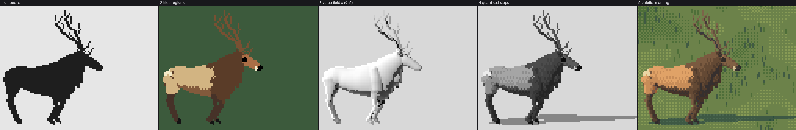
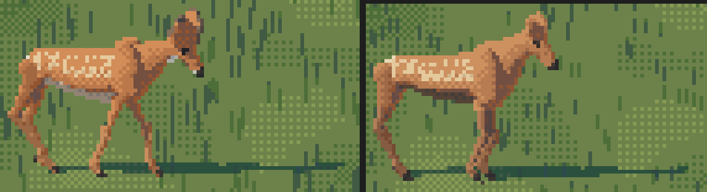
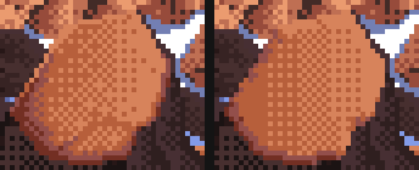
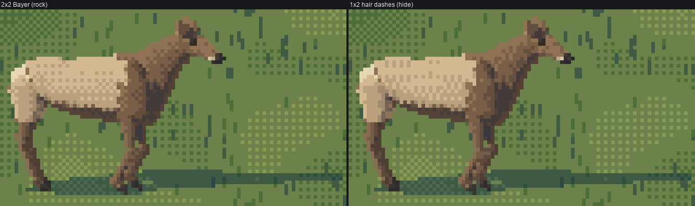
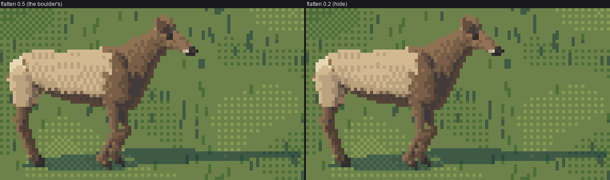
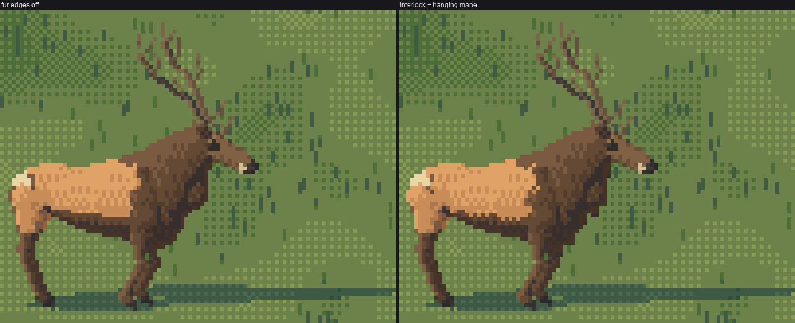

4. The hide at hero size (60–30 px)
Back to the tutorial. Code: render.py, coat.py, paint.py, hide.py, fringe.py, s0_copy.py in ~/work/pixelart-studies/elements/deer-elk/src/.
This page is how the rig becomes pixels when the animal is big enough to have a hide: 30 to 60 px of body length, the hero tier. It's the tier where my work is weakest against Ferrari, so I'll be exact about what works and what doesn't.

fig. One 60 px bull through the pipeline: silhouette; hide regions; the continuous value field; quantised steps; the palette.
1. Tubes to an index canvas
render.rasterize samples every tube's surface densely (points closer than half a supersample pixel apart), projects them orthographically for a yaw and camera elevation, z-buffers them at ss × ss supersampling, and reduces each block to one pixel: a coverage, a mean normal, a majority material, a depth. A light-space z-buffer gives self-shadow; the same points projected along the sun onto z = 0 give the cast shadow.
Two things I learned the hard way:
- Sample by profile change, not just by arc length. Where the radius changes fast along a tube, arc-length spacing leaves gaps, which showed as white slits in the torso (nb014). Count the profile change as length, and interpolate stations with PCHIP.
- Supersample more when the animal is small:
ss = clip(round(260 / size_px), 3, 12). A 60 px elk needs 4×, a 16 px one 12×, or thin parts flicker in and out between frames.
The output is an index canvas: per pixel, a hide material (R.mat) and a step 0–5 (R.step). The palette (next page) turns those into colour, so one canvas serves every hour.
2. Hide regions in body coordinates
The coat pattern is the far read, so it has to be anatomically placed. My first regions were vertical cuts at a fixed x and looked pasted on. The fix: compute each surface point's pose-free position on the torso (its station x, its height zl, the angle round the section) and draw the regions there, so they move with the body in any pose.
if elk:
out[:] = BODY
# the cape: the dark neck colour runs back over the shoulder on a diagonal, from just
# behind the withers down to behind the elbow, and covers the brisket
cape_x = 0.19 + (1.0 - zl) * 0.34 + (0.03 if ind.sex == "m" else 0.0)
out[x > cape_x] = DARK
out[(zl < np.interp(x, [xr, xf], [0.66, 0.56]) + 0.05) & (x > xr + 0.15)] = BELLY # dark belly line
# rump patch: an oval about the tail, bordered dark on the thighs, open at the croup
ex = (x - (xr + 0.015)) / 0.15; ez = (zl - 0.80) / 0.17
e = ex * ex + ez * ez
out[(e < 1.6) & (zl < 0.9) & (x < xr + 0.2)] = DARK
out[e < 1.0] = PALE
The rest of the pattern, from the naturalist's description and the photos:
- Elk: dark head, neck, mane, brisket and legs; the face (
FACE) a shade lighter than the neck, so a front view has a head; a cream muzzle band; the tail the colour of the patch. - Blacktail: grey-brown all over (rust in summer), a white throat patch high under the jaw, a dark forehead V, big ears with pale insides and dark rims, a broad tail black outside and white beneath, and no white rump unless the tail is flagged. A white rump patch is the mule deer's mark.
- Calves and fawns: spots in rows along the back, each row offset half a step, only in spring and summer; by September they're plain. My first spots were random and read as a rash (nb058); rows at 0.1 H spacing read as spots (nb059).


3. A value field that doesn't saturate
From each pixel's mean normal and shadow flag, a continuous step coordinate x in 0–5: light 5 and 4, halftone 3, reflected 2, shadow 1, core 0.
litf = (v > 0.04) & ~sh # v = n . L
x[litf] = 2.8 + 2.35 * np.clip((v[litf] - 0.04) / 0.9, 0, 1)
x[~litf] = 1.1
x[~litf & ~sh & (v > -0.3)] = 0.45 # the core, just past the terminator
x[~litf] += 1.0 * np.clip(-n[..., 2] - 0.2, 0, 1)[~litf] # bounce from the lit ground onto the belly
x[far] -= 1.1 # far legs, far ear, far antler: a step down
x[shoulder] = max(x, min(3.0, x + 1.6)) # the shoulder bulge may not draw a strap
x[antler] = min(x, 3.4) # beams stay dark; only tips are ivory
Check that the lit family actually spans its steps. My first mapping put every surface facing up or out on the top step; I found it by printing one torso column (row, material, step, x, n·L): 274 of 320 flank pixels were step 5. A flank that's one value is dead no matter what you dither on it. The linear mapping above gives a lit back, a mid flank and a halftone lower flank.
Watch the far side. The far legs and ear, a step down, are what make a side view read as a body with depth instead of a cut-out.
4. What the Ferrari copy gave: planes, edge bands, the saturated reflected step
Ferrari never painted an elk, so I copied the closest thing in his work: the warm orange boulder in V19, about the size of a 60 px elk's body. I read it from his index map, printed as characters sorted by value:
33333c8aaccccccccfcfffcffffffffffa872iee99 c, f = the two lit colours, mixed in a 2x2 order
13353c8accccfcfcfcfcfcfcfcfcfffffa72257eee a, 8 = the turn: a dull rose, then a SATURATED red-brown
3333c8acaccccccfcfcfcfffffffffffca7227577e 7, 2 = shadow; the lit face meets lighter snow with no edge
The whole lit face is one gradient between two adjacent colours, rendered as a 2×2 Bayer fill (fitting the density of f as a linear function of position reproduced 81% of his face pixels exactly; a dome got 50%). The form turns only in a 1–2 px band at the edge, and the reflected colour there is more saturated than the lit ones.

Ferrari | my copy (68% of his pixels exactly, 81% of the face).
hide.apply carries three rules from it:
# edges turned away from the sun fall one step; in the shadow family the rim takes the reflected step
x[away & litf] = np.minimum(x[away & litf], np.floor(x[away & litf]) - 0.01)
x[away & ~litf] = np.maximum(x[away & ~litf], 2.0)
# edges toward the sun take the pure upper step (his crown is pure f)
x[tow & litf] = np.minimum(np.floor(x[tow & litf]) + 1.0, 5.0)
# found edges for dark hide: a dark neck or leg against grass steps up at its sun-side edge
x[tow & dark & ~litf] = np.maximum(x[tow & dark & ~litf], 3.0)
and the palette boosts chroma on step 2 by 30%, his saturated 8.
The found-edge rule for dark hide is the one I'd keep above all. A chocolate neck against green grass has nearly the grass's value; without a lighter pixel on its sun side it melts into the ground, and an outline would make it a cartoon.
5. What it didn't give: hide is not rock
The checker. On a hide, the boulder's 2×2 checker reads as sandstone. Keep the order but make the cells 1 px wide and 2 px tall, staggered per column, so the mixed tone becomes short vertical dashes: hair lying down the flank.
def hair_quant(x, seed=0):
H, W = x.shape
yy, xx = np.mgrid[0:H, 0:W]
ph = ((xx * 7919 + seed * 104729) >> 3) & 1 # per-column phase: stagger the dashes
t = (BAYER[((yy + ph) // 2) % 2, xx % 2] + 0.5) / 4
fl = np.floor(x)
return np.clip(fl + ((x - fl) > t), 0, 5).astype(np.int32)

fig. The same cow with the boulder's 2×2 Bayer, and with hair dashes. The difference is small at this size and it's the right direction; the flank is still a gradient, not planes.
Below 28 px there's no dither at all: marks are single pixels and a checker is noise.
The flattening. The boulder is a facet, so the copy pulls the interior toward one value (0.5). On a barrel that deadened the side; hide uses 0.2. Honestly, with the fixed value map the difference is now small:

6. Fur edges
Where two hide colours meet, the boundary is a fringe, not a line (the studio's synthesis: "a mass outline isn't drawn as a line"). fringe.interlock makes 1-px teeth on alternate 2-row blocks across vertical boundaries and hanging teeth across horizontal ones; fringe.hang hangs the bull's mane below the neck as irregular 1–3 px dark ticks. Both are deterministic in (seed, pixel), so a standing animal holds still.
ys, xs = np.nonzero(m[:, :-1] == a) # a | b boundaries
sel = m[ys, xs + 1] == b
blk = (ys // 2 + (_h(ys // 2, xs, seed) < 0.3)) % 2 == 0 # alternate 2-row blocks, a little jitter
out[ys[sel][blk], xs[sel][blk]] = b

fig. Fur edges off and on: look at the cape edge on the shoulder and the mane under the neck.
7. Antlers are drawn, not rendered
Rasterised, antlers came out as pale lichen with white snowballs on the tips (nb041). render.thin_lines clears their splats and redraws every beam and tine as a clean 1-px Bresenham run through its centreline, 2 px near the base with the shadow-side pixel a step darker. Beams are dark; only the last fifth of each tine is ivory.

And economy by size, in paint_index: below 30 px keep the beams and the two long tines on the near side only; below 16 px the glyph antler takes over.
8. Contact
Every animal gets an occlusion shadow under its torso, whatever the sun, projected from the torso's footprint, so it sits on the meadow; plus the true cast shadow. Keep the cast shadow a step lighter than the ground's darks, or in iso it swallows the legs.
Where it stops

Photo reduced to 60 px | my bull | Ferrari's boulder at the same scale, 6×.
Against the photo, my bull is less weighty: his shoulder and ham are lit masses with darker ribs between, and mine is a lit barrel with hair dashes. Against Ferrari my planes are too few: his boulder has three clear planes and an edge band, my barrel has a gradient. The fix I'd make next is in the rig, not the dither: model shoulder, ribcage and ham as separate convex masses, give each its own lit plane in the value field (the boulder rule, applied per mass), and put the hair dashes only at the seams between them.